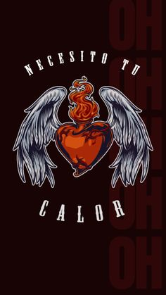
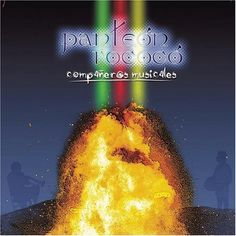
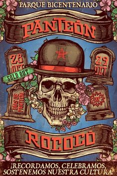

|
Panteón
Rococó es una de las bandas más representativas del ska en México y en
la escena de rock latino, fundada en 1995. A lo largo de los años, se
han caracterizado por su estilo único que fusiona ska, rock, reggae,
punk, cumbia y otros géneros, manteniendo una identidad muy propia en
su música. La banda es conocida por su capacidad para mezclar mensajes
sociales y políticos con un sonido alegre y bailable, lo que los ha
convertido en un referente para varias generaciones de jóvenes en
Latinoamérica. El grupo ha sido un activista dentro de su música, abordando temas como derechos humanos, lucha contra la corrupción, la desigualdad social y la defensa de los más desfavorecidos. Aunque su estilo de música es festivo, sus letras son profundas y muchas veces están impregnadas de crítica social. A lo largo de su carrera, han logrado consolidar un gran número de seguidores tanto en México como en otros países de habla hispana. Panteón Rococó ha sido parte de importantes festivales de música, como Vive Latino y Corona Capital, y ha realizado varias giras internacionales, llevando su música a lugares como Argentina, Chile, España y Estados Unidos. La banda también ha sido un pilar para la evolución del ska mexicano, y ha influido en muchas bandas emergentes de este género. Además, han mantenido una gran conexión con su público, lo que se refleja en sus enérgicos conciertos y en su constante evolución musical. A lo largo de su carrera, han lanzado discos que incluyen una mezcla de géneros, como ska, rock, reggae y baladas, lo que les ha permitido mantenerse vigentes en la escena musical. |
CANCIONES POPULARES:
- "La Dosis Perfecta" – Su himno más conocido, una canción romántica con ritmo de ska.
- "Vendedora de Caricias" – Un tema con una historia emotiva y una gran combinación de ska y rock.
- "La Carencia" – Canción con una fuerte crítica social y un ritmo muy bailable.
- "Cúrame" – Un tema que mezcla ska con reggae, lleno de sentimiento.
- "Este País" – Crítica política sobre la situación en México, con una gran carga social.
- "Borracho" – Canción fiestera con un ritmo pegajoso y una letra divertida.
- "Acábame de Matar" – Un tema melancólico con influencia de la música regional mexicana.
- "Arréglame el Alma" – Otra de sus canciones más queridas, con un tono romántico.
- "Asesinos" – Un tema de protesta con un sonido potente.
- "Buscándote" – Una de sus canciones más recientes y populares.
|  |
 |
 |
 |